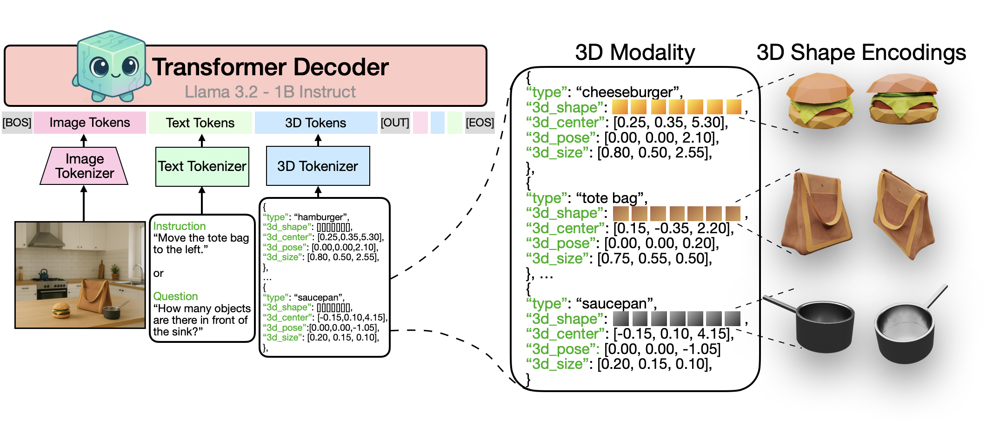

tl;dr We propose a unified LLM framework that aligns language, images, and structured 3D scenes to perform core 3D tasks.
Creating machines capable of understanding the world in 3D is essential in assisting designers that build and edit 3D environments and robots navigating and interacting within a three-dimensional space. Inspired by advances in language and image modeling, we investigate the potential of autoregressive models for a new modality: structured 3D scenes. To this end, we propose a unified LLM framework that aligns language, images, and 3D scenes and provide a detailed ''cookbook'' outlining critical design choices for achieving optimal training and performance addressing key questions related to data representation, modality-specific objectives, and more. We evaluate performance across four core 3D tasks – rendering, recognition, instruction-following, and question-answering – and four 3D datasets, synthetic and real-world. We extend our approach to reconstruct complex 3D object shapes by enriching our 3D modality with quantized shape encodings, and show our model's effectiveness on real-world 3D object recognition tasks.
Kyvo: a decoder-only transformer aligns a structured 3D modality with language and vision. This 3D modality represents scenes as lists of objects, each defined by its 3D shape, type, 3D position, pose and size parameters. Kyvo unifies the token space of images, text, and 3D to enable a variety of complex visual 3D tasks.
From a single image, Kyvo reconstructs 3D object shape and layout.
Given 3D assets and the desired 3D location and pose, Kyvo predicts the image autoregressively.
Below is a JSON panel with exactly 3 objects. Each object has a fixed xy-coords, but
you can change its
shape to balloon, barrel, vase, bottle,
or basketball.
Click "Generate" to retrieve a corresponding pre-computed ObjaWorld image.

Below is a JSON panel with exactly 3 objects. The first and third are read-only, and you can
only modify the middle object. Choose shape, material,
color, and size for the second object. The 3d-coords are fixed.
Click "Generate" to retrieve a corresponding precomputed image.
{ "shape": "sphere", "material": "metal", "color": "red", "size": "large", "xy-coords": "(-1.60,-2.20)" }
{ "shape": "", "material": "", "color": "", "size": "", "xy-coords": "(2.40,-2.35)" }
{ "shape": "cylinder", "material": "rubber", "color": "yellow", "size": "large", "xy-coords": "(2.75,0.35)" }
Below is another interactive demo that lets you vary the x-coordinate from -3.00 to
+3.00 in steps of 0.05. For each x value, we display a pair of images:
generated vs. groundtruth.


@misc{sahoo2025aligningtextimages3d,
title={Aligning Text, Images, and 3D Structure Token-by-Token},
author={Aadarsh Sahoo and Vansh Tibrewal and Georgia Gkioxari},
year={2025},
eprint={2506.08002},
archivePrefix={arXiv},
primaryClass={cs.CV},
url={https://arxiv.org/abs/2506.08002},
}